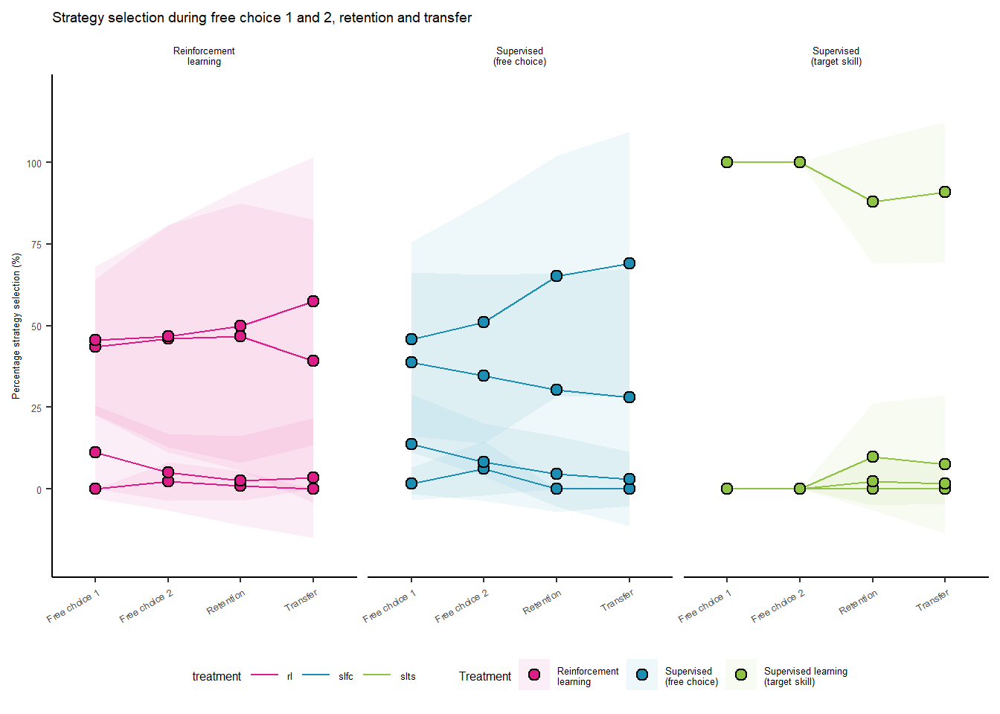
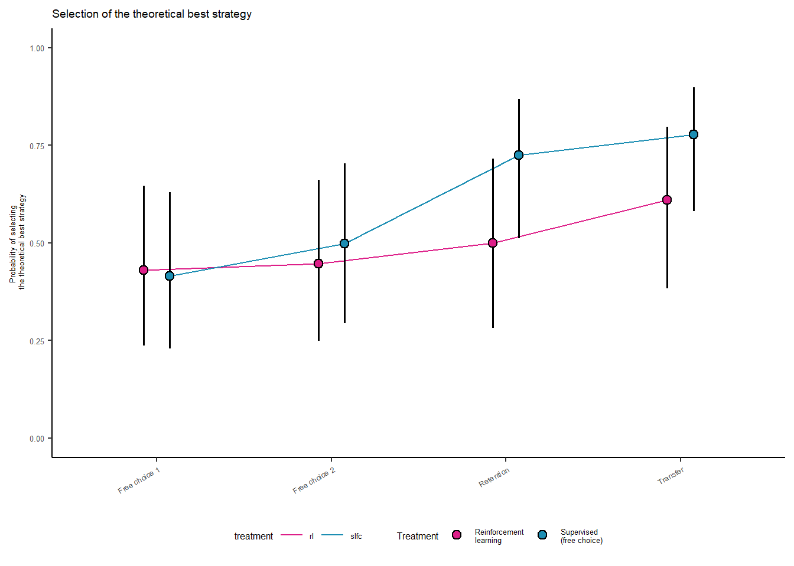

# Load in packages
library(tidyverse) # For data manipulation
library(lme4) # For statistical modelling
library(lmerTest) # For statistical modelling
library(ggpubr) # To create publication-ready figures
library(easystats) # For model diagnostics
library(emmeans) # For estimating marginal effects
library(ggbeeswarm) # For
library(gt) # To create tables
library(xtable)
library(patchwork)
library(cowplot)
library(scales)Model: Strategy selection
This quarto file analyzes the strategy choices made by coaches and skiers. Every analysis reported in the paper related to strategy selection can be found here. We start by loading the necessary packages and a custom function for data analysis.
source("../../themes/themes.R") # This is a custom themeNext, we load in the data
# We load the data
d <- read_csv("../../data/data_analysis/data_analysis.csv")
d# A tibble: 3,067 × 16
skigroup skier treatment session trial strategy best_strategy_first
<chr> <dbl> <chr> <chr> <dbl> <chr> <chr>
1 a 1 slfc baseline 1 ns d
2 a 1 slfc baseline 2 ns d
3 a 1 slfc baseline 3 ns d
4 a 1 slfc baseline 4 ns d
5 a 1 slfc block1 5 a d
6 a 1 slfc block1 6 c d
7 a 1 slfc block1 7 b d
8 a 1 slfc block1 8 d d
9 a 1 slfc block1 9 d d
10 a 1 slfc block1 10 c d
# ℹ 3,057 more rows
# ℹ 9 more variables: best_strategy_last <chr>, theory_best <chr>,
# racingtime <dbl>, chose_best_strategy <dbl>, chose_theoretical_best <dbl>,
# regret_a <dbl>, regret_b <dbl>, regret_c <dbl>, regret_d <dbl>Please note that “block1,” “block2,” and “block3” correspond to “forced exploration,” “free choice 1,” and “free choice 2”. We organized it this way in the tibble for easier formatting.
Descriptive
Descriptive: Calculation
Here, we create a tibble with the descriptive statistics of coaches’ and skiers’ choices for each session.
# Filter the sessions we want to analysis
d_freechoice <- filter(d, session %in% c("block2", "block3", "retention", "transfer"))
# Then we count and calculate the percentage for each strategy for each skier in the dataset
agg_d_freechoice <- d_freechoice |>
group_by(skigroup, skier, session, treatment) |>
summarise(a = sum(strategy == 'a'),
b = sum(strategy == 'b'),
c = sum(strategy == 'c'),
d = sum(strategy == 'd'),
total = sum(a,b,c,d),
a_percent = round(a / total * 100,0),
b_percent = round(b / total * 100,0),
c_percent = round(c / total * 100,0),
d_percent = round(d / total * 100,0)
) |>
ungroup()
agg_d_freechoice# A tibble: 384 × 13
skigroup skier session treatment a b c d total a_percent
<chr> <dbl> <chr> <chr> <int> <int> <int> <int> <int> <dbl>
1 a 1 block2 slfc 0 1 3 2 6 0
2 a 1 block3 slfc 0 2 2 2 6 0
3 a 1 retention slfc 0 1 1 2 4 0
4 a 1 transfer slfc 0 1 1 2 4 0
5 a 2 block2 slfc 0 2 0 4 6 0
6 a 2 block3 slfc 0 2 2 2 6 0
7 a 2 retention slfc 0 1 0 3 4 0
8 a 2 transfer slfc 0 1 0 3 4 0
9 a 3 block2 rl 0 2 1 3 6 0
10 a 3 block3 rl 0 3 0 3 6 0
# ℹ 374 more rows
# ℹ 3 more variables: b_percent <dbl>, c_percent <dbl>, d_percent <dbl>Then we calculate the mean and sd for strategy for each treatment and session
agg_d_freechoice_mean <- agg_d_freechoice |>
group_by(session, treatment) |>
summarise(a = mean(a_percent),
b = mean(b_percent),
c = mean(c_percent),
d = mean(d_percent)) |>
pivot_longer(cols = c(a, b, c, d), names_to = "strategy", values_to = "percentage") |>
ungroup()
agg_d_freechoice_sd <- agg_d_freechoice |>
group_by(session, treatment) |>
summarise(a = sd(a_percent),
b = sd(b_percent),
c = sd(c_percent),
d = sd(d_percent)) |>
pivot_longer(cols = c(a, b, c, d), names_to = "strategy", values_to = "sd") |>
ungroup()
agg_d_freechoice <- agg_d_freechoice_mean |>
left_join(agg_d_freechoice_sd, by = c("session", "strategy", "treatment")) |>
ungroup() |>
mutate(sd_value_high = percentage + sd,
sd_value_low = percentage - sd
)
agg_d_freechoice# A tibble: 48 × 7
session treatment strategy percentage sd sd_value_high sd_value_low
<chr> <chr> <chr> <dbl> <dbl> <dbl> <dbl>
1 block2 rl a 0 0 0 0
2 block2 rl b 43.4 20.9 64.3 22.5
3 block2 rl c 11.3 14.2 25.4 -2.89
4 block2 rl d 45.5 22.7 68.2 22.8
5 block2 slfc a 1.55 4.96 6.51 -3.42
6 block2 slfc b 38.8 27.5 66.3 11.2
7 block2 slfc c 13.7 15.2 28.9 -1.54
8 block2 slfc d 45.9 29.8 75.7 16.1
9 block2 slts a 0 0 0 0
10 block2 slts b 0 0 0 0
# ℹ 38 more rowsDescriptive: figure
We create a plot of the raw data to include in the figure
agg_d_freechoice |>
ggplot(aes(x = session, y = percentage, fill = treatment, group = interaction(session, strategy))) +
geom_ribbon(aes(ymin = sd_value_low, ymax = sd_value_high, group = strategy, fill = treatment), alpha = 0.075) +
geom_line(aes(group = strategy, color = treatment)) +
geom_point(pch = 21, size = point_size, color = "black", stroke = stroke_size) +
facet_wrap(~treatment, labeller = labeller(
treatment = c(rl = "Reinforcement\nlearning", slfc = "Supervised\n(free choice)", slts = "Supervised\n(target skill)")
)) +
scale_color_manual(values = colorPalette) +
scale_fill_manual(values = colorPalette, name = "Treatment", labels = c('Reinforcement\nlearning', 'Supervised\n(free choice)', 'Supervised learning\n(target skill)')) +
scale_x_discrete(labels = c("block2" = "Free choice 1", "block3" = "Free choice 2", "retention" = "Retention", "transfer" = "Transfer")) +
scale_y_continuous(breaks = seq(0, 100, 25), limits = c(-20, 120)) + # Set breaks and limits for y-axis
labs(title = "Strategy selection during free choice 1 and 2, retention and transfer", x = NULL, y = "Percentage strategy selection (%)") +
theme_bw() +
theme_rlstudy +
theme(
legend.position = "bottom",
legend.title = element_text(size = 6),
legend.text = element_text(size = 5)
)
#ggsave("test2.svg", device="svg", width=120,height=90, unit="mm")Selection of theoretical and estimated best strategy
We will fit a multilevel generalized logistic regression model. Unfortunately, we were not able to run any models with supervised (target skill) learning because they always or nearly always picked the best strategy, so had to exclude this treatment group from the analysis.
# We filter rl and slfc because slts only select one strategy.
# We were unable to fit the model with slts
d_freechoice <- filter(d_freechoice, treatment != "slts")
d_freechoice# A tibble: 1,255 × 16
skigroup skier treatment session trial strategy best_strategy_first
<chr> <dbl> <chr> <chr> <dbl> <chr> <chr>
1 a 1 slfc block2 13 c d
2 a 1 slfc block2 14 c d
3 a 1 slfc block2 15 d d
4 a 1 slfc block2 16 d d
5 a 1 slfc block2 17 c d
6 a 1 slfc block2 18 b d
7 a 1 slfc block3 19 b d
8 a 1 slfc block3 20 d d
9 a 1 slfc block3 21 c d
10 a 1 slfc block3 22 c d
# ℹ 1,245 more rows
# ℹ 9 more variables: best_strategy_last <chr>, theory_best <chr>,
# racingtime <dbl>, chose_best_strategy <dbl>, chose_theoretical_best <dbl>,
# regret_a <dbl>, regret_b <dbl>, regret_c <dbl>, regret_d <dbl>We set up contrast codes. We use the simple coding scheme
# Simple code treatment
d_freechoice <- mutate(d_freechoice, treatment=as.factor(treatment)) # Turn it into factor
d_freechoice$treatment <- relevel(d_freechoice$treatment, ref = "rl")
treatmentcoding <- contr.treatment(2)
matrix <- matrix(rep(1/2, 2), ncol=1)
treatment_simplecoded <- treatmentcoding - matrix
contrasts(d_freechoice$treatment) <- treatment_simplecoded
# Simple code session
d_freechoice <- mutate(d_freechoice, session=as.factor(session))
treatmentcoding <- contr.treatment(4)
matrix <- matrix(rep(1/4, 12), ncol=3)
session_simplecoded <- treatmentcoding - matrix
contrasts(d_freechoice$session) <- session_simplecodedSelection of the theoretical best strategy
We run the glmer() model from the lme4 package and log the summary output on the log-odds scale.
# chose_theoretica_best consists of 0s and 1s
model_theorybest_1 <- glmer(chose_theoretical_best ~ treatment * session + (1 | skigroup/skier),
family = "binomial",
data = d_freechoice)
summary(model_theorybest_1)Generalized linear mixed model fit by maximum likelihood (Laplace
Approximation) [glmerMod]
Family: binomial ( logit )
Formula: chose_theoretical_best ~ treatment * session + (1 | skigroup/skier)
Data: d_freechoice
AIC BIC logLik deviance df.resid
1335.0 1386.4 -657.5 1315.0 1245
Scaled residuals:
Min 1Q Median 3Q Max
-3.2136 -0.5831 0.1953 0.5783 3.7039
Random effects:
Groups Name Variance Std.Dev.
skier:skigroup (Intercept) 3.2240 1.7956
skigroup (Intercept) 0.2489 0.4989
Number of obs: 1255, groups: skier:skigroup, 63; skigroup, 4
Fixed effects:
Estimate Std. Error z value Pr(>|z|)
(Intercept) 0.2265 0.3470 0.653 0.513828
treatment2 0.4809 0.4828 0.996 0.319194
session2 0.2007 0.1804 1.112 0.265925
session3 0.7928 0.2090 3.794 0.000148 ***
session4 1.1628 0.2120 5.486 4.11e-08 ***
treatment2:session2 0.2661 0.3608 0.738 0.460806
treatment2:session3 1.0292 0.4175 2.465 0.013699 *
treatment2:session4 0.8630 0.4225 2.043 0.041059 *
---
Signif. codes: 0 '***' 0.001 '**' 0.01 '*' 0.05 '.' 0.1 ' ' 1
Correlation of Fixed Effects:
(Intr) trtmn2 sessn2 sessn3 sessn4 trt2:2 trt2:3
treatment2 -0.023
session2 0.002 0.002
session3 0.038 0.008 0.438
session4 0.038 0.014 0.433 0.396
trtmnt2:ss2 0.002 0.002 -0.006 0.002 0.003
trtmnt2:ss3 0.005 0.055 0.002 0.028 0.021 0.438
trtmnt2:ss4 0.009 0.055 0.003 0.020 0.060 0.434 0.394We derive the estimated probability of choosing the theoretical best strategy using the emmeans package:
emm_model_theorybest = emmeans(model_theorybest_1, specs = ~ treatment * session, type = "response") #Note the response argument, which converts from log-odds to probabilities
emm_model_theorybest_tibble <- as_tibble(emm_model_theorybest)
emm_model_theorybest_tibble # A tibble: 8 × 7
treatment session prob SE df asymp.LCL asymp.UCL
<fct> <fct> <dbl> <dbl> <dbl> <dbl> <dbl>
1 rl block2 0.430 0.111 Inf 0.237 0.647
2 slfc block2 0.415 0.108 Inf 0.230 0.629
3 rl block3 0.446 0.112 Inf 0.249 0.662
4 slfc block3 0.498 0.111 Inf 0.294 0.703
5 rl retention 0.499 0.118 Inf 0.282 0.716
6 slfc retention 0.724 0.0934 Inf 0.512 0.868
7 rl transfer 0.610 0.112 Inf 0.383 0.798
8 slfc transfer 0.778 0.0816 Inf 0.581 0.898We want the estimates converted into latex format. We will use this function.
write_emmeans_prob <- function(emmeans_data, model_name) {
d_emmean <- as_tibble(emmeans_data)
model_name <- as.character(model_name)
# Create the folder if it doesn't exist
folder_path <- "../../latex/statistics/choice"
if (!dir.exists(folder_path)) {
dir.create(folder_path)
}
# Loop over every row in d_emmean
for (i in 1:nrow(d_emmean)) {
row <- d_emmean[i, ]
treatment <- as.character(row$treatment)
session <- as.character(row$session)
prob <- round(row$prob, digits = 2)
report <- paste(prob)
filename <- file.path(folder_path, paste("predictedprob_",model_name,"_",treatment,"_",session,".tex"))
filename <- gsub(" ", "", filename, fixed = TRUE)
cat(report, file = filename)
}
}
write_emmeans_prob(emm_model_theorybest,"choice_theorybest")We are interested in the contrast at each session. We derive these from emmeans package with pairs()
contrast_emm_model_theorybest <- pairs(regrid(emm_model_theorybest), by = "session", adjust="none", transform = "none", infer = c(TRUE, TRUE))
contrast_emm_model_theorybest_tibble <- as_tibble(contrast_emm_model_theorybest)
contrast_emm_model_theorybest_tibble <- contrast_emm_model_theorybest_tibble |>
mutate(contrast = str_replace_all(contrast, " ", "") %>% str_replace_all("-", "_minus_"))
contrast_emm_model_theorybest_tibble# A tibble: 4 × 9
contrast session estimate SE df asymp.LCL asymp.UCL z.ratio p.value
<chr> <fct> <dbl> <dbl> <dbl> <dbl> <dbl> <dbl> <dbl>
1 rl_minus_slfc block2 0.0143 0.128 Inf -0.237 0.266 0.111 0.911
2 rl_minus_slfc block3 -0.0517 0.131 Inf -0.308 0.205 -0.395 0.693
3 rl_minus_slfc retent… -0.225 0.129 Inf -0.477 0.0265 -1.75 0.0794
4 rl_minus_slfc transf… -0.168 0.119 Inf -0.401 0.0656 -1.41 0.159 We want to report these contrast in the paper. Therefore, we have created this function that converts this test statistics into latex code.
write_contrasts_z_session <- function(emmeans_data, model_name) {
d_emmean <- as_tibble(emmeans_data)
model_name <- as.character(model_name)
# Create the folder if it doesn't exist
folder_path <- "../../latex/statistics/choice"
if (!dir.exists(folder_path)) {
dir.create(folder_path)
}
p_value_writer <- function(p_value) {
symbol <-ifelse(p_value > 0.001," = ", " < ")
p_value_format <- ifelse(p_value > 0.001, formatC(round(p_value, digits = 3), digits = 3, format = "f"), "0.001")
write_p_value <- paste(symbol, p_value_format)
return(write_p_value )
}
# Loop over every row in d_emmean
for (i in 1:nrow(d_emmean)) {
row <- d_emmean[i, ]
contrast <- as.character(row$contrast)
session <- as.character(row$session)
beta <- round(row$estimate, digits = 2)
statistic <- round(row$z.ratio, digits = 2)
ci_low <- round(row$asymp.LCL, digits = 2)
ci_high <- round(row$asymp.UCL, digits = 2)
p_value <- row$p.value
report <- paste("$\\beta$ =", beta, ", 95\\% CI [",ci_low, ", ", ci_high, "], $z$ =", statistic, ", $p$", p_value_writer(p_value))
filename <- file.path(folder_path, paste("contrast_",model_name,"_",contrast,"_",session,".tex"))
filename <- gsub(" ", "", filename, fixed = TRUE)
cat(report, file = filename)
}
}
write_contrasts_z_session(contrast_emm_model_theorybest_tibble, "choice_theorybest")We are also interested in the change in predicted prob for each session. We derive these from emmeans package with pairs()
contrast_emm_model_theorybest_diff <- pairs(regrid(emm_model_theorybest), by = "treatment", adjust="none", transform = "none", infer = c(TRUE, TRUE), reverse = TRUE)
contrast_emm_model_theorybest_diff_tibble <- as_tibble(contrast_emm_model_theorybest_diff)
contrast_emm_model_theorybest_diff_tibble <- contrast_emm_model_theorybest_diff_tibble |>
mutate(contrast = str_replace_all(contrast, " ", "") %>% str_replace_all("-", "_minus_"))
contrast_emm_model_theorybest_diff_tibble # A tibble: 12 × 9
contrast treatment estimate SE df asymp.LCL asymp.UCL z.ratio p.value
<chr> <fct> <dbl> <dbl> <dbl> <dbl> <dbl> <dbl> <dbl>
1 block3_m… rl 0.0167 0.0630 Inf -0.107 0.140 0.264 7.91e-1
2 retentio… rl 0.0691 0.0723 Inf -0.0726 0.211 0.956 3.39e-1
3 retentio… rl 0.0524 0.0724 Inf -0.0895 0.194 0.724 4.69e-1
4 transfer… rl 0.181 0.0699 Inf 0.0435 0.318 2.58 9.81e-3
5 transfer… rl 0.164 0.0701 Inf 0.0265 0.301 2.34 1.94e-2
6 transfer… rl 0.111 0.0784 Inf -0.0422 0.265 1.42 1.55e-1
7 block3_m… slfc 0.0826 0.0628 Inf -0.0404 0.206 1.32 1.88e-1
8 retentio… slfc 0.309 0.0672 Inf 0.177 0.441 4.59 4.37e-6
9 retentio… slfc 0.226 0.0683 Inf 0.0923 0.360 3.31 9.31e-4
10 transfer… slfc 0.362 0.0680 Inf 0.229 0.496 5.33 9.96e-8
11 transfer… slfc 0.280 0.0695 Inf 0.143 0.416 4.02 5.73e-5
12 transfer… slfc 0.0535 0.0631 Inf -0.0701 0.177 0.848 3.96e-1We write them to latex code with the following function
write_contrasts_z_treatment <- function(emmeans_data, model_name) {
d_emmean <- as_tibble(emmeans_data)
model_name <- as.character(model_name)
# Create the folder if it doesn't exist
folder_path <- "../../latex/statistics/choice"
if (!dir.exists(folder_path)) {
dir.create(folder_path)
}
p_value_writer <- function(p_value) {
symbol <-ifelse(p_value > 0.001," = ", " < ")
p_value_format <- ifelse(p_value > 0.001, formatC(round(p_value, digits = 3), digits = 3, format = "f"), "0.001")
write_p_value <- paste(symbol, p_value_format)
return(write_p_value )
}
# Loop over every row in d_emmean
for (i in 1:nrow(d_emmean)) {
row <- d_emmean[i, ]
contrast <- as.character(row$contrast)
treatment <- as.character(row$treatment)
beta <- round(row$estimate, digits = 2)
statistic <- round(row$z.ratio, digits = 2)
ci_low <- round(row$asymp.LCL, digits = 2)
ci_high <- round(row$asymp.UCL, digits = 2)
p_value <- row$p.value
report <- paste("$\\beta$ =", beta, ", 95\\% CI [",ci_low, ", ", ci_high, "], $z$ =", statistic, ", $p$", p_value_writer(p_value))
filename <- file.path(folder_path, paste("contrast_",model_name,"_",contrast,"_",treatment,".tex"))
filename <- gsub(" ", "", filename, fixed = TRUE)
cat(report, file = filename)
}
}
write_contrasts_z_treatment(contrast_emm_model_theorybest_diff_tibble, "choice_theorybest2")We also want to extract the estimated interaction term from the model and save that into a tibble.
# Here we extract the interaction effect (i.e. difference-in-difference) from the model
# And we make that into a tibble
interaction_emm_model_theorybest <- contrast(regrid(emm_model_theorybest), interaction = "pairwise", type = "response", adjust="none", infer=c(TRUE, TRUE))
interaction_emm_model_theorybest_tibble <- interaction_emm_model_theorybest |> as_tibble()
interaction_emm_model_theorybest_tibble <- rename(interaction_emm_model_theorybest_tibble, contrast = treatment_pairwise)
interaction_emm_model_theorybest_tibble <- interaction_emm_model_theorybest_tibble |>
mutate(contrast = str_replace_all(contrast, " ", "") %>% str_replace_all("-", "_x_"), session = str_replace_all(session_pairwise, " ", "") %>% str_replace_all("-", "_x_"))
interaction_emm_model_theorybest_tibble# A tibble: 6 × 10
contrast session_pairwise estimate SE df asymp.LCL asymp.UCL z.ratio
<chr> <fct> <dbl> <dbl> <dbl> <dbl> <dbl> <dbl>
1 rl_x_slfc block2 - block3 0.0660 0.0889 Inf -0.108 0.240 0.742
2 rl_x_slfc block2 - retention 0.240 0.0988 Inf 0.0461 0.433 2.43
3 rl_x_slfc block2 - transfer 0.182 0.0970 Inf -0.00835 0.372 1.87
4 rl_x_slfc block3 - retention 0.174 0.0996 Inf -0.0215 0.369 1.74
5 rl_x_slfc block3 - transfer 0.116 0.0982 Inf -0.0765 0.308 1.18
6 rl_x_slfc retention - trans… -0.0579 0.100 Inf -0.255 0.139 -0.577
# ℹ 2 more variables: p.value <dbl>, session <chr>write_interactions_z <- function(emmeans_data, model_name) {
d_emmean <- as_tibble(emmeans_data)
model_name <- as.character(model_name)
# Create the folder if it doesn't exist
folder_path <- "../../latex/statistics/choice"
if (!dir.exists(folder_path)) {
dir.create(folder_path)
}
p_value_writer <- function(p_value) {
symbol <-ifelse(p_value > 0.001," = ", " < ")
p_value_format <- ifelse(p_value > 0.001, formatC(round(p_value, digits = 3), digits = 3, format = "f"), "0.001")
write_p_value <- paste(symbol, p_value_format)
return(write_p_value )
}
# Loop over every row in d_emmean
for (i in 1:nrow(d_emmean)) {
row <- d_emmean[i, ]
contrast <- as.character(row$contrast)
session <- as.character(row$session)
beta <- round(row$estimate, digits = 2)
statistic <- round(row$z.ratio, digits = 2)
ci_low <- round(row$asymp.LCL, digits = 2)
ci_high <- round(row$asymp.UCL, digits = 2)
p_value <- row$p.value
report <- paste("$\\beta$ =", beta, ", 95\\% CI [",ci_low, ", ", ci_high, "], $z$ =", statistic, ", $p$", p_value_writer(p_value))
filename <- file.path(folder_path, paste("interaction_",model_name,"_",contrast,"_",session,".tex"))
filename <- gsub(" ", "", filename, fixed = TRUE)
cat(report, file = filename)
}
}
write_interactions_z(interaction_emm_model_theorybest_tibble, "choice_theorybest_interaction")Here, we plot the estimated probabilities.
a <- emm_model_theorybest_tibble |>
ggplot(aes(x = session, y = prob, fill = treatment, color=treatment)) +
geom_line(aes(group=treatment), stroke = stroke_size, position=position_dodge(dodge_width)) +
geom_linerange(aes(x = session, y = prob, color=treatment, ymin = asymp.LCL, ymax = asymp.UCL, fill = treatment), color = "black", pch = 21, size = line_size, stroke = stroke_size, position=position_dodge(dodge_width)) +
geom_point(pch = 21, size = point_size, color = "black",size = 0.25, stroke = stroke_size, position=position_dodge(dodge_width)) +
scale_color_manual(values = colorPalette) +
scale_fill_manual(values = colorPalette, name = "Treatment", labels = c('Reinforcement\nlearning', 'Supervised\n(free choice)', 'Supervised learning\n(target skill)')) +
scale_y_continuous(breaks = seq(0, 1, 0.25), limits = c(0, 1)) +
scale_x_discrete(labels = c("block2" = "Free choice 1", "block3" = "Free choice 2", "retention" = "Retention", "transfer" = "Transfer")) +
labs(x=NULL, y="Probability of selecting \n the theoretical best strategy", title="Selection of the theoretical best strategy") +
theme_bw() +
theme_rlstudy +
theme(
legend.position = "bottom",
legend.title = element_text(size = 6),
legend.text = element_text(size = 5)
)
a 
#ggsave("test1.svg", device="svg", width=89, height=65, unit="mm")Selection of the estimated best strategy
Here, we analyze the estimated best strategy. Since we have already selected the right data, we go straight to modelling. We run the glmer() model from the lme4 package and log the summary output on the log-odds scale.
# chose_theoretica_best consists of 0s and 1s
model_estimatedbest <- glmer(chose_best_strategy ~ treatment * session + (1 | skigroup/skier),
family = "binomial",
data = d_freechoice)
summary(model_estimatedbest)Generalized linear mixed model fit by maximum likelihood (Laplace
Approximation) [glmerMod]
Family: binomial ( logit )
Formula: chose_best_strategy ~ treatment * session + (1 | skigroup/skier)
Data: d_freechoice
AIC BIC logLik deviance df.resid
1307.0 1358.3 -643.5 1287.0 1245
Scaled residuals:
Min 1Q Median 3Q Max
-3.1632 -0.6434 0.2921 0.4846 2.5092
Random effects:
Groups Name Variance Std.Dev.
skier:skigroup (Intercept) 2.5424 1.5945
skigroup (Intercept) 0.1975 0.4444
Number of obs: 1255, groups: skier:skigroup, 63; skigroup, 4
Fixed effects:
Estimate Std. Error z value Pr(>|z|)
(Intercept) 0.91273 0.31129 2.932 0.003367 **
treatment2 -0.09387 0.43548 -0.216 0.829341
session2 0.67126 0.18302 3.668 0.000245 ***
session3 0.76576 0.20817 3.679 0.000235 ***
session4 1.04414 0.21152 4.936 7.96e-07 ***
treatment2:session2 -0.57909 0.36548 -1.584 0.113092
treatment2:session3 0.37793 0.41554 0.909 0.363092
treatment2:session4 0.05705 0.42163 0.135 0.892365
---
Signif. codes: 0 '***' 0.001 '**' 0.01 '*' 0.05 '.' 0.1 ' ' 1
Correlation of Fixed Effects:
(Intr) trtmn2 sessn2 sessn3 sessn4 trt2:2 trt2:3
treatment2 -0.022
session2 0.016 -0.009
session3 0.052 0.005 0.427
session4 0.058 0.001 0.425 0.380
trtmnt2:ss2 -0.006 0.020 -0.002 0.013 0.010
trtmnt2:ss3 0.005 0.070 0.015 0.049 0.022 0.424
trtmnt2:ss4 0.003 0.077 0.012 0.021 0.040 0.422 0.377We derive the estimated probability of choosing the estimated best strategy using the emmeans package:
emm_model_estimatedbest = emmeans(model_estimatedbest, specs = ~ treatment * session, type = "response") #Note the response argument, which converts from log-odds to probabilities
emm_model_estimatedbest_tibble <- as_tibble(emm_model_estimatedbest)
emm_model_estimatedbest_tibble# A tibble: 8 × 7
treatment session prob SE df asymp.LCL asymp.UCL
<fct> <fct> <dbl> <dbl> <dbl> <dbl> <dbl>
1 rl block2 0.580 0.0993 Inf 0.383 0.754
2 slfc block2 0.566 0.0989 Inf 0.372 0.741
3 rl block3 0.783 0.0707 Inf 0.615 0.891
4 slfc block3 0.656 0.0913 Inf 0.463 0.808
5 rl retention 0.711 0.0891 Inf 0.512 0.852
6 slfc retention 0.772 0.0762 Inf 0.591 0.888
7 rl transfer 0.792 0.0721 Inf 0.618 0.900
8 slfc transfer 0.792 0.0717 Inf 0.619 0.899We write these predicted probabilies to latex code
write_emmeans_prob(emm_model_estimatedbest,"choice_estimatedbest")We are interested in the contrast at each session. We derive these from emmeans package with pairs()
contrast_emm_model_estimatedbest <- pairs(regrid(emm_model_estimatedbest), by = "session", adjust="none", transform = "none", infer = c(TRUE, TRUE))
contrast_emm_model_estimatedbest_tibble <- as_tibble(contrast_emm_model_estimatedbest)
contrast_emm_model_estimatedbest_tibble <- contrast_emm_model_estimatedbest_tibble |>
mutate(contrast = str_replace_all(contrast, " ", "") %>% str_replace_all("-", "_minus_"))
contrast_emm_model_estimatedbest_tibble# A tibble: 4 × 9
contrast session estimate SE df asymp.LCL asymp.UCL z.ratio p.value
<chr> <fct> <dbl> <dbl> <dbl> <dbl> <dbl> <dbl> <dbl>
1 rl_minus_s… block2 1.42e-2 0.117 Inf -0.215 0.244 0.121 0.904
2 rl_minus_s… block3 1.27e-1 0.0977 Inf -0.0646 0.318 1.30 0.194
3 rl_minus_s… retent… -6.12e-2 0.101 Inf -0.259 0.136 -0.607 0.544
4 rl_minus_s… transf… 1.30e-4 0.0874 Inf -0.171 0.171 0.00148 0.999We write to latex
write_contrasts_z_session(contrast_emm_model_estimatedbest_tibble, "choice_estimatedbest")We are also interested in the change in predicted prob for each session. We derive these from emmeans package with pairs()
contrast_emm_model_estimatedbest_diff <- pairs(regrid(emm_model_estimatedbest), by = "treatment", adjust="none", transform = "none", infer = c(TRUE, TRUE), reverse = TRUE)
contrast_emm_model_estimatedbest_diff_tibble <- as_tibble(contrast_emm_model_estimatedbest_diff)
contrast_emm_model_estimatedbest_diff_tibble <- contrast_emm_model_estimatedbest_diff_tibble |>
mutate(contrast = str_replace_all(contrast, " ", "") %>% str_replace_all("-", "_minus_"))
contrast_emm_model_estimatedbest_diff_tibble # A tibble: 12 × 9
contrast treatment estimate SE df asymp.LCL asymp.UCL z.ratio p.value
<chr> <fct> <dbl> <dbl> <dbl> <dbl> <dbl> <dbl> <dbl>
1 block3_m… rl 0.203 0.0599 Inf 0.0857 0.321 3.39 6.99e-4
2 retentio… rl 0.131 0.0648 Inf 0.00401 0.258 2.02 4.32e-2
3 retentio… rl -0.0722 0.0580 Inf -0.186 0.0414 -1.25 2.13e-1
4 transfer… rl 0.212 0.0643 Inf 0.0862 0.338 3.30 9.67e-4
5 transfer… rl 0.00917 0.0498 Inf -0.0884 0.107 0.184 8.54e-1
6 transfer… rl 0.0814 0.0621 Inf -0.0403 0.203 1.31 1.90e-1
7 block3_m… slfc 0.0904 0.0613 Inf -0.0297 0.211 1.48 1.40e-1
8 retentio… slfc 0.206 0.0663 Inf 0.0763 0.336 3.11 1.87e-3
9 retentio… slfc 0.116 0.0616 Inf -0.00497 0.237 1.88 6.02e-2
10 transfer… slfc 0.226 0.0667 Inf 0.0956 0.357 3.39 6.93e-4
11 transfer… slfc 0.136 0.0616 Inf 0.0153 0.257 2.21 2.72e-2
12 transfer… slfc 0.0201 0.0575 Inf -0.0926 0.133 0.350 7.27e-1We write them to latex
write_contrasts_z_treatment(contrast_emm_model_estimatedbest_diff_tibble, "choice_estimatedbest")We also want to extract the estimated interaction term from the model and save that into a tibble.
# Here we extract the interaction effect (i.e. difference-in-difference) from the model
# And we make that into a tibble
interaction_emm_model_estimatedbest <- contrast(regrid(emm_model_estimatedbest), interaction = "pairwise", type = "response", adjust="none", infer=c(TRUE, TRUE))
interaction_emm_model_estimatedbest_tibble <- interaction_emm_model_estimatedbest |> as_tibble()
interaction_emm_model_estimatedbest_tibble <- rename(interaction_emm_model_estimatedbest_tibble, contrast = treatment_pairwise)
interaction_emm_model_estimatedbest_tibble <- interaction_emm_model_estimatedbest_tibble |>
mutate(contrast = str_replace_all(contrast, " ", "") %>% str_replace_all("-", "_x_"), session = str_replace_all(session_pairwise, " ", "") %>% str_replace_all("-", "_x_"))
interaction_emm_model_estimatedbest_tibble# A tibble: 6 × 10
contrast session_pairwise estimate SE df asymp.LCL asymp.UCL z.ratio
<chr> <fct> <dbl> <dbl> <dbl> <dbl> <dbl> <dbl>
1 rl_x_slfc block2 - block3 -0.113 0.0848 Inf -0.279 0.0536 -1.33
2 rl_x_slfc block2 - retention 0.0753 0.0912 Inf -0.103 0.254 0.826
3 rl_x_slfc block2 - transfer 0.0140 0.0892 Inf -0.161 0.189 0.157
4 rl_x_slfc block3 - retention 0.188 0.0856 Inf 0.0202 0.356 2.20
5 rl_x_slfc block3 - transfer 0.127 0.0790 Inf -0.0281 0.282 1.60
6 rl_x_slfc retention - trans… -0.0613 0.0844 Inf -0.227 0.104 -0.727
# ℹ 2 more variables: p.value <dbl>, session <chr>We write them to latex files
write_interactions_z(interaction_emm_model_estimatedbest_tibble, "choice_estimatedbest_interaction")Here, we plot the estimated probabilities.
b <- emm_model_estimatedbest_tibble |>
ggplot(aes(x = session, y = prob, fill = treatment, color=treatment)) +
geom_line(aes(group=treatment), stroke = stroke_size, position=position_dodge(dodge_width)) +
geom_linerange(aes(x = session, y = prob, color=treatment, ymin = asymp.LCL, ymax = asymp.UCL, fill = treatment), color = "black", pch = 21, size = line_size, stroke = stroke_size, position=position_dodge(dodge_width)) +
geom_point(pch = 21, size = point_size, color = "black",size = 0.25, stroke = stroke_size, position=position_dodge(dodge_width)) +
scale_color_manual(values = colorPalette) +
scale_fill_manual(values = colorPalette, name = "Treatment", labels = c('Reinforcement\nlearning', 'Supervised\n(free choice)', 'Supervised learning\n(target skill)')) +
scale_y_continuous(breaks = seq(0, 1, 0.25), limits = c(0, 1)) +
scale_x_discrete(labels = c("block2" = "Free choice 1", "block3" = "Free choice 2", "retention" = "Retention", "transfer" = "Transfer")) +
labs(x=NULL, y="Probability of selecting \n the theoretical best strategy", title="Selection of the theoretical best strategy") +
theme_bw() +
theme_rlstudy +
theme(
legend.position = "bottom",
legend.title = element_text(size = 6),
legend.text = element_text(size = 5)
)Warning in geom_line(aes(group = treatment), stroke = stroke_size, position =
position_dodge(dodge_width)): Ignoring unknown parameters: `stroke`Warning in geom_linerange(aes(x = session, y = prob, color = treatment, :
Ignoring unknown parameters: `shape` and `stroke`Warning in geom_linerange(aes(x = session, y = prob, color = treatment, :
Ignoring unknown aesthetics: fillWarning: Duplicated aesthetics after name standardisation: sizeggsave("test1.svg", device="svg", width=89, height=65, unit="mm")Regret / Cost
#plot_grid(fig_top_left_1,fig_top_left_2, fig_top_right_1, fig_top_right_2, fig_bottom_left_1, fig_bottom_left_2, fig_bottom_right_1, fig_bottom_right_2, axis="lr", align="vh", ncol=4)
#ggsave("plot_model_estimatedbest.svg", units="cm", width=16, height=8, device="svg")